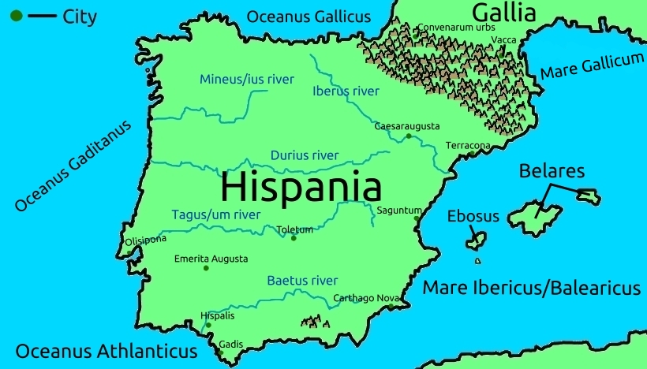

Hispania
Hispania, or as it had also been known: Iberia - a name originating from the river Iberus (Ebro) - and Hesperia - a name originating from "Hesperus", the name of the "Evening Star", Venus in the evening. Hispania is located right on the westernmost edge of Europe, above the straits of Gibraltar, below the Pyrenees, or Pyrenaeus, mountains, and west of the Atlantic ocean.
It stands next to the Mediterranean, or "Great", Sea, who is often subdivided into areas. The closest of these areas to Spain are known as the Gallic sea to the northeast and the Balearic sea to the southeast, the seas having played a great role in Spain's history.
Spain was first settled by the Phoenicians around Gadis, and later by Carthagenians and Romans. The Carthagineans especially in the area around New Carthage, or Carthage Spartaria, as it is sometimes known, and the Romans settling especially in the northeast, in the province of Terraconens.
There are several great rivers going through Spain: The Baetis, Mineus, Iberus, Durius, and Tagum - or Tagus - rivers. They are also known by the more modern names of Guadalquivir, Minho, Ebro, Douro, and Tagus.
The Tagum is especially most well-known for it's gold, making it similar to the Pactolus river in Turkey, or, as most of what is today Turkey was known to the Romans, "Asia Minor".
The islands off the coast of Spain are Ebosus, and the two Baleares islands, sometimes known among people as Majorica and Minorica, due to one being "major", larger, and one being "minor", smaller - although their proper names are Aphrosiades - the big one; And Gymnaside - the small one.
These islands are the birthplace of the net that throws stones, known as a ballista. So the Greek βαλλίστρα - Ballistra, leading to the name "Balleares", and later "Ballearic", for the islands. Today, Ebosus is also considered part of the Ballearic islands, it's name having evolved to Ibiza.